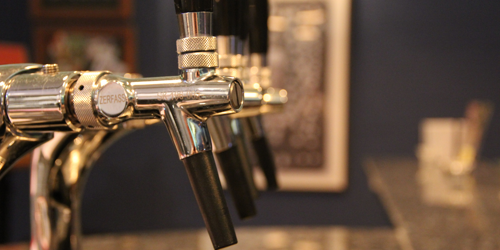

| Bier vom Fass | Preis | |
|---|---|---|
| Keiler Kölsch | 0,2l | 2,10€ |
| Keiler Kölsch | 0,4l | 4,00€ |
| Keiler Helles | 0,2l | 2,20€ |
| Keiler Helles | 0,4l | 4,10€ |
| Keiler Weizen | 0,5l | 4,90€ |
| Keiler Weizen Maß | 1,0l | 9,10€ |
| Keiler Weizen Alkoholfrei | 0,5l | 4,90€ |
| Keiler Weizen Alkoholfrei Maß | 1,0l | 9,10€ |
| Schnaps und Likör | Preis | |
|---|---|---|
| Hausgebrannter Keiler Schnaps | 0,2cl | 2,50€ |
| Korn | 0,2cl | 2,00€ |
| Doppelwacholder | 0,2cl | 2,50€ |
| Kölscher Kümmel | 0,2cl | 3,50€ |
| Jägermeister | 0,2cl | 4,00€ |
| Alkoholfreie Getränke | Preis | |
|---|---|---|
| Mineralwasser | 0,25l | 2,50€ |
| Mineralwasser | 0,7l | 6,50€ |
| Apfelsaftschorle | 0,25l | 2,60€ |
| Limonade | 0,2l | 2,50€ |
| Tasse Kaffee | 0,15l | 2,50€ |